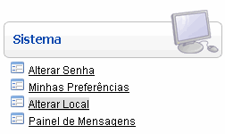
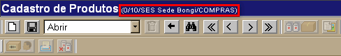
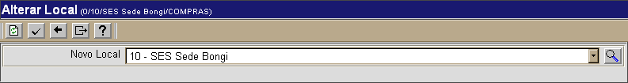

Alterar Local [ Voltar ]Para acessar a tela onde pode alterar o local onde se encontra, o usuário pode abrir o formulário "Alterar Local", dentro do menu "Sistema" da tela inicial.
Uma a forma de acessar a mesma tela sem ter de voltar à tela inicial, é clicando no informativo de local e usuário que se encontra na barra de título em todas as telas, à direita do nome do formulário. 
Ao acessar o formulário via tela principal ou pelo atalho, a seguinte tela será aberta:  Para alterar o local atual, siga os passos abaixo: 1° Passo: selecione o novo local para onde o usuário deseja ir. 2° Passo: clique no botão  para
efetuar a troca de local. para
efetuar a troca de local. |